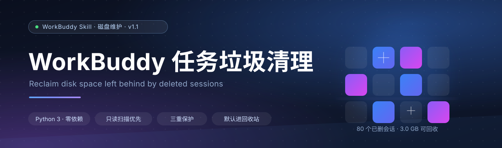
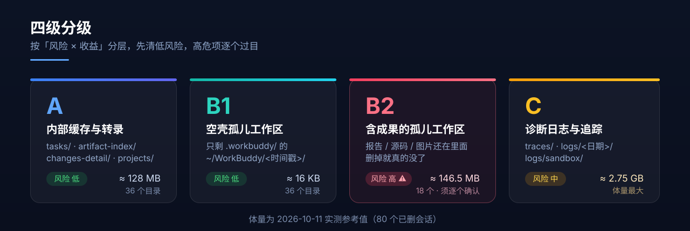
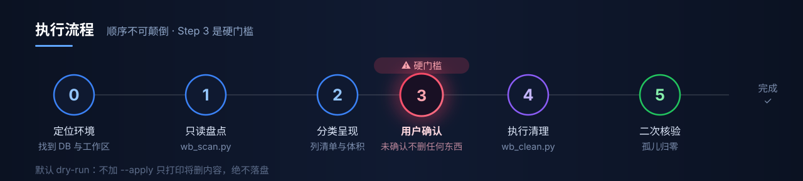
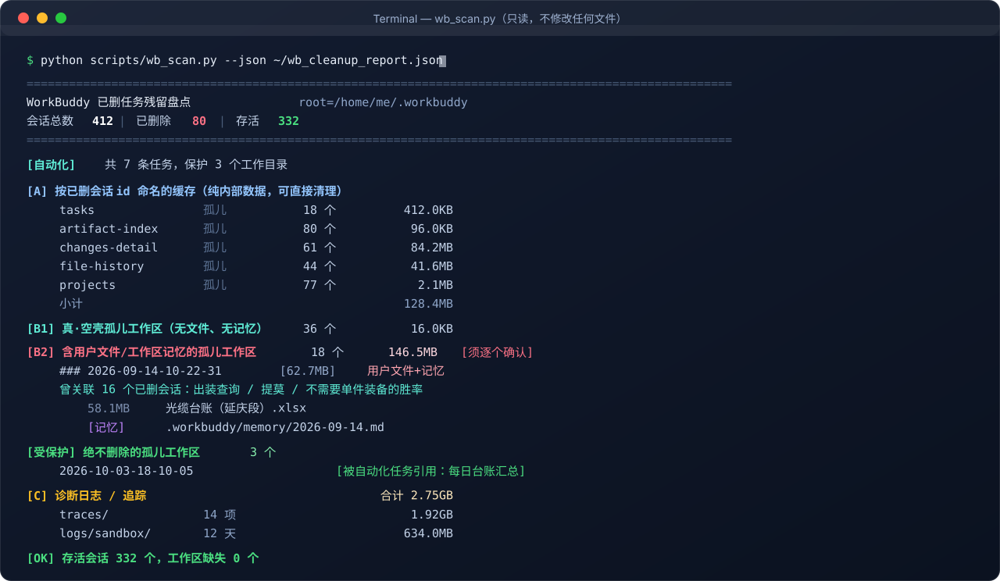
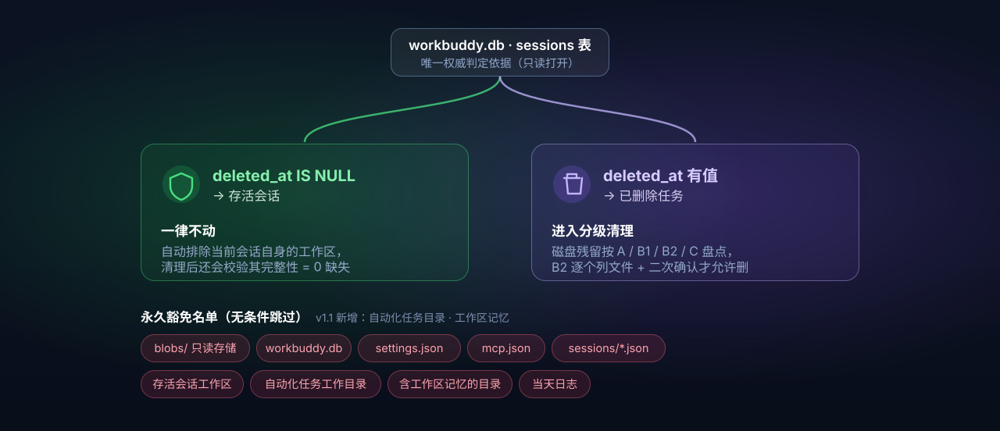

WorkBuddy 用久了，磁盘上会悄悄堆起一批"孤儿"—— 任务记录删了，但磁盘上的缓存、转录、日志还留着。
删掉的对话，磁盘上的文件并没有跟着一起走。用时无感，翻目录时心惊。
任务记录删了，但 tasks/、changes-detail/、projects/ 下的数据留了下来。
每次新建对话都会生成一个 playground 工作区，对话删了，目录还在。
分不清哪个目录属于"活着的"任务，删错了就回不来 —— 这才是最劝退的。
traces/ 和沙箱日志能悄悄涨到好几个 GB，却没人提醒你。
它们只看"文件夹大不大"，不认识 WorkBuddy 的数据结构，容易误伤。
不猜、不看目录时间、不信侧边栏 —— 只认一个权威依据：数据库里的 deleted_at 字段。
-- 唯一权威判定依据（脚本以 mode=ro 只读打开，绝不写入） SELECT id, cwd, title, deleted_at FROM sessions; deleted_at IS NULL → ✅ 存活会话 其数据一律不动 deleted_at 有值 → 🗑️ 已删除任务 磁盘残留即"垃圾"
存活会话的缓存也可能很久没更新，会误伤。
空目录也可能正被存活会话引用着。
那只是快照，而且不含后台任务。
不同级别的风险天差地别。所以拆开处理 —— 低风险的批量清，动到你成果的逐个过目。

| 级别 | 内容 | 典型路径 | 风险 | 实测体量 |
|---|---|---|---|---|
| A | 内部缓存与会话转录 | tasks/ changes-detail/ file-history/ projects/ |
🟢 低 | ≈ 128 MB |
| B1 | 空壳孤儿工作区 | ~/WorkBuddy/<时间戳>/ 只剩 .workbuddy/ |
🟢 低 | ≈ 16 KB |
| B2 | 含成果文件的孤儿工作区 | 里面还有你的报告 / 源码 / 图片 | 🔴 高 | ≈ 146.5 MB |
| C | 诊断日志与运行追踪 | traces/ logs/<日期>/ logs/sandbox/ |
🟡 中 | ≈ 2.75 GB |
第 3 步是硬门槛：没拿到你明确的选择之前，一个字节都不会删。

两个脚本只用标准库，Python 3.8+ 即可，不需要 pip install 任何东西。
# Windows（PowerShell） Expand-Archive -Path workbuddy-task-cleanup.zip -DestinationPath "$env:USERPROFILE\.workbuddy\skills" -Force # macOS / Linux unzip workbuddy-task-cleanup.zip -d ~/.workbuddy/skills/ # 或者直接 clone git clone https://github.com/Lemon177777/workbuddy-task-cleanup.git \ ~/.workbuddy/skills/workbuddy-task-cleanup
「清理 workbuddy 垃圾」 · 「WorkBuddy 占空间太大」 · 「清理已删除任务的残留」
# ① 只读盘点 —— 放心跑，绝不修改任何文件 python scripts/wb_scan.py --json ~/wb_cleanup_report.json # ② 预览将删除的内容（默认 dry-run，不落盘） python scripts/wb_clean.py --tiers A,B1,C # ③ 看过预览、确认无误后，才真正执行 python scripts/wb_clean.py --tiers A,B1,C --apply # ④ 想连 B2 一起清，必须额外显式声明（它含你的成果文件） python scripts/wb_clean.py --tiers A,B1,C,B2 --include-b2 --apply # ⑤ 二次核验（务必重跑一次，删除钩子可能延迟落盘） python scripts/wb_scan.py

这是一个"会删文件"的工具。所以默认动作必须是保守的，任何"多做一步"都需要你显式授权。

不加 --apply，脚本只打印"将删什么"，绝不动盘。
B2 必须同时给出 --tiers B2 和 --include-b2。
每次清理后自动检查存活会话工作区，缺失必须为 0。
先扫描 → 后呈现 → 再确认 → 末执行，顺序不可颠倒。
不动数据库。只读打开（mode=ro），绝不写入一个字节。
不碰 blobs/ —— 那是内容寻址存储，存活任务也在引用，删了会破坏数据。
B2 必须逐个列文件 + 二次确认 —— 那是你的成果，不是缓存。
删完必须二次核验，并报告「存活会话工作区缺失 = 0」。
保留当天的日志 logs/<今天>/ 与 logs/sandbox/<今天>/。
要求永久删除时，先加粗警告并列出受影响文件路径，取得明确同意后才动手。
不会。判定只依据 sessions.deleted_at：IS NULL 的存活会话，其工作区与数据一律跳过。脚本还会自动把当前正在运行的会话工作区排除在外，清理后额外校验一次完整性。
只要还没清理过，它们大概率还躺在 ~/WorkBuddy/<时间戳>/ 里 —— 这正是 B2 存在的意义。把它们找回来，是可回收的那 146 MB 之外、更值钱的东西。
这是本机 safe-delete 钩子的已知行为：删除会被转成回收站操作，且可能在 rmtree() 返回之后才真正落盘。所以必须重跑一次 wb_scan.py 做二次核验，不要仅凭第一轮输出下结论。
logs/sandbox 整目录删除失败？已知坑。整目录删会报 Some operations were aborted，必须按日期子目录（如 20261009/）逐个删。脚本已经这么做了，并且会保留当天。
能。两个脚本纯标准库，路径基于 ~/.workbuddy 与 ~/WorkBuddy，三个平台通用。用 python3 代替 python 即可。
不会。清理范围只有两处：~/.workbuddy/ 内部的缓存与日志，以及 ~/WorkBuddy/<时间戳>/ 下的孤儿工作区。你在别处创建的项目目录，不在扫描范围内。
可以配一个定时任务只跑只读盘点，把报告推给你；但删除动作建议始终保留人工确认 —— 尤其 B2，那是你的成果文件，不该被自动化悄悄带走。